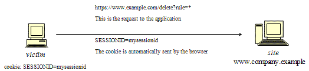

Summary
CSRF is an attack that forces an end user to execute unwanted actions on a web application in which he/she is currently authenticated. With a little help of social engineering (like sending a link via email or chat), an attacker may force the users of a web application to execute actions of the attacker's choosing. A successful CSRF exploit can compromise end user data and operation, when it targets a normal user. If the targeted end user is the administrator account, a CSRF attack can compromise the entire web application.
CSRF relies on the following:
- Web browser behavior regarding the handling of session-related information such as cookies and http authentication information
- Knowledge by the attacker of valid web application URLs
- Application session management relying only on information which is known by the browser
- Existence of HTML tags whose presence cause immediate access to an http[s] resource; for example the image tag img
Points 1, 2, and 3 are essential for the vulnerability to be present, while point 4 facilitates the actual exploitation, but is not strictly required. - Point 1) Browsers automatically send information which is used to identify a user session. Suppose site is a site hosting a web application, and the user victim has just authenticated himself to site. In response, site sends victim a cookie which identifies requests sent by victim as belonging to victim’s authenticated session. Basically, once the browser receives the cookie set by site, it will automatically send it along with any further requests directed to site.
- Point 2) If the application does not make use of session-related information in URLs, then it means that the application URLs, their parameters, and legitimate values may be identified (either by code analysis or by accessing the application and taking note of forms and URLs embedded in the HTML/JavaScript).
- Point 3) "Known by the browser” refers to information such as cookies, or http-based authentication information (such as Basic Authentication; and not form-based authentication), which are stored by the browser and subsequently present at each request directed towards an application area requesting that authentication. The vulnerabilities discussed next apply to applications which rely entirely on this kind of information to identify a user session.
Suppose, for simplicity's sake, to refer to GET-accessible URLs (though the discussion applies as well to POST requests). If victim has already authenticated himself, submitting another request causes the cookie to be automatically sent with it (see picture, where the user accesses an application on www.example.com).

The GET request could be originated in several different ways:
- by the user, who is using the actual web application;
- by the user, who types the URL directly in the browser;
- by the user, who follows a link (external to the application) pointing to the URL.
These invocations are indistinguishable by the application. In particular, the third may be quite dangerous. There are a number of techniques (and of vulnerabilities) which can disguise the real properties of a link. The link can be embedded in an email message, or appear in a malicious web site where the user is lured, i.e., the link appears in content hosted elsewhere (another web site, an HTML email message, etc.) and points to a resource of the application. If the user clicks on the link, since it was already authenticated by the web application on site, the browser will issue a GET request to the web application, accompanied by authentication information (the session id cookie). This results in a valid operation performed on the web application and probably not what the user expects to happen. Think of a malicious link causing a fund transfer on a web banking application to appreciate the implications.
By using a tag such as img, as specified in point 4 above, it is not even necessary that the user follows a particular link. Suppose the attacker sends the user an email inducing him to visit an URL referring to a page containing the following (oversimplified) HTML:
<html><body>
...
<img src=”https://www.company.example/action” width=”0” height=”0”>
...
</body></html>
What the browser will do when it displays this page is that it will try to display the specified zero-width (i.e., invisible) image as well. This results in a request being automatically sent to the web application hosted on site. It is not important that the image URL does not refer to a proper image, its presence will trigger the request specified in the src field anyway. This happens provided that image download is not disabled in the browsers, which is a typical configuration since disabling images would cripple most web applications beyond usability.
The problem here is a consequence of the following facts:
- there are HTML tags whose appearance in a page result in automatic http request execution (img being one of those);
- the browser has no way to tell that the resource referenced by img is not actually an image and is in fact not legitimate;
- image loading happens regardless of the location of the alleged image, i.e., the form and the image itself need not be located in the same host, not even in the same domain. While this is a very handy feature, it makes difficult to compartmentalize applications.
It is the fact that HTML content unrelated to the web application may refer components in the application, and the fact that the browser automatically composes a valid request towards the application, that allows such kind of attacks. As no standards are defined right now, there is no way to prohibit this behavior unless it is made impossible for the attacker to specify valid application URLs. This means that valid URLs must contain information related to the user session, which is supposedly not known to the attacker and therefore make the identification of such URLs impossible.
The problem might be even worse, since in integrated mail/browser environments simply displaying an email message containing the image would result in the execution of the request to the web application with the associated browser cookie.
Things may be obfuscated further, by referencing seemingly valid image URLs such as
<img src=”https://[attacker]/picture.gif” width=”0” height=”0”>
where [attacker] is a site controlled by the attacker, and by utilizing a redirect mechanism on
http://[attacker]/picture.gif to http://[thirdparty]/action.
Cookies are not the only example involved in this kind of vulnerability. Web applications whose session information is entirely supplied by the browser are vulnerable too. This includes applications relying on HTTP authentication mechanisms alone, since the authentication information is known by the browser and is sent automatically upon each request. This DOES NOT include form-based authentication, which occurs just once and generates some form of session-related information (of course, in this case, such information is expressed simply as a cookie and can we fall back to one of the previous cases).
Sample scenario.
Let’s suppose that the victim is logged on to a firewall web management application. To log in, a user has to authenticate himself and session information is stored in a cookie.
Let's suppose the firewall web management application has a function that allows an authenticated user to delete a rule specified by its positional number, or all the rules of the configuration if the user enters ‘*’ (quite a dangerous feature, but it will make the example more interesting). The delete page is shown next. Let’s suppose that the form – for the sake of simplicity – issues a GET request, which will be of the form
https://[target]/fwmgt/delete?rule=1
(to delete rule number one)
https://[target]/fwmgt/delete?rule=*
Therefore, if we enter the value ‘*’ and press the Delete button, the following GET request is submitted.
https://www.company.example/fwmgt/delete?rule=*
with the effect of deleting all firewall rules (and ending up in a possibly inconvenient situation).
Now, this is not the only possible scenario. The user might have accomplished the same results by manually submitting the URL
https://[target]/fwmgt/delete?rule=*
or by following a link pointing, directly or via a redirection, to the above URL. Or, again, by accessing an HTML page with an embedded img tag pointing to the same URL.
In all of these cases, if the user is currently logged in the firewall management application, the request will succeed and will modify the configuration of the firewall. One can imagine attacks targeting sensitive applications and making automatic auction bids, money transfers, orders, changing the configuration of critical software components, etc.
An interesting thing is that these vulnerabilities may be exercised behind a firewall; i.e., it is sufficient that the link being attacked be reachable by the victim (not directly by the attacker). In particular, it can be any Intranet web server; for example, the firewall management station mentioned before, which is unlikely to be exposed to the Internet. Imagine a CSRF attack targeting an application monitoring a nuclear power plant. Sounds far fetched? Probably, but it is a possibility.
Self-vulnerable applications, i.e., applications that are used both as attack vector and target (such as web mail applications), make things worse. If such an application is vulnerable, the user is obviously logged in when he reads a message containing a CSRF attack, that can target the web mail application and have it perform actions such as deleting messages, sending messages appearing as sent by the user, etc.
How to Test Black Box Testing
For a black box test the tester must know URLs in the restricted (authenticated) area. If they possess valid credentials, they can assume both roles – the attacker and the victim. In this case, testers know the URLs to be tested just by browsing around the application.
Otherwise, if testers don’t have valid credentials available, they have to organize a real attack, and so induce a legitimate, logged in user into following an appropriate link. This may involve a substantial level of social engineering.
Either way, a test case can be constructed as follows:
- let u the URL being tested; for example, u = http://www.example.com/action
- build an html page containing the http request referencing URL u (specifying all relevant parameters; in the case of http GET this is straightforward, while to a POST request you need to resort to some Javascript);
- make sure that the valid user is logged on the application;
- induce him into following the link pointing to the URL to be tested (social engineering involved if you cannot impersonate the user yourself);
- observe the result, i.e. check if the web server executed the request.
Gray Box Testing
Audit the application to ascertain if its session management is vulnerable. If session management relies only on client side values (information available to the browser), then the application is vulnerable. "Client side values” mean cookies and HTTP authentication credentials (Basic Authentication and other forms of HTTP authentication; not form-based authentication, which is an application-level authentication). For an application to not be vulnerable, it must include session-related information in the URL, in a form of unidentifiable or unpredictable by the user ([3] uses the term secret to refer to this piece of information).
Resources accessible via HTTP GET requests are easily vulnerable, though POST requests can be automated via Javascript and are vulnerable as well; therefore, the use of POST alone is not enough to correct the occurrence of CSRF vulnerabilities.
In case of POST, the following sample can be used.
<html>
<body onload='document.CSRF.submit()'>
<form action='http://tagetWebsite/Authenticate.jsp' method='POST' name='CSRF'>
<input type='hidden' name='name' value='Hacked'>
<input type='hidden' name='password' value='Hacked'>
</form>
</body>
</html>
Tools
References
Whitepapers
Remediation
The following countermeasures are divided among recommendations to users and to developers.
Users
Since CSRF vulnerabilities are reportedly widespread, it is recommended to follow best practices to mitigate risk. Some mitigating actions are:
- Logoff immediately after using a web application
- Do not allow the browser to save username/passwords, and do not allow sites to “remember” the log in details.
- Do not use the same browser to access sensitive applications and to surf freely the Internet; if it is necessary to do both things at the same machine, do them with separate browsers.
Integrated HTML-enabled mail/browser, newsreader/browser environments pose additional risks since simply viewing a mail message or a news message might lead to the execution of an attack.
Developers
Add session-related information to the URL. What makes the attack possible is the fact that the session is uniquely identified by the cookie, which is automatically sent by the browser. Having other session-specific information being generated at the URL level makes it difficult to the attacker to know the structure of URLs to attack.
Other countermeasures, while they do not resolve the issue, contribute to make it harder to exploit:
- Use POST instead of GET. While POST requests may be simulated by means of JavaScript, they make it more complex to mount an attack.
- The same is true with intermediate confirmation pages (such as: “Are you sure you really want to do this?” type of pages). They can be bypassed by an attacker, although they will make their work a bit more complex. Therefore, do not rely solely on these measures to protect your application.
- Automatic log out mechanisms somewhat mitigate the exposure to these vulnerabilities, though it ultimately depends on the context (a user who works all day long on a vulnerable web banking application is obviously more at risk than a user who uses the same application occasionally).
Related Security Activities Description of CSRF Vulnerabilities
See the OWASP article on CSRF Vulnerabilities.
How to Avoid CSRF Vulnerabilities
See the OWASP Development Guide article on how to Avoid CSRF Vulnerabilities.
How to Review Code for CSRF Vulnerabilities
See the OWASP Code Review Guide article on how to Review Code for CSRF Vulnerabilities.
How to Prevent CSRF Vulnerabilites
See the OWASP CSRF Prevention Cheat Sheet for prevention measures.